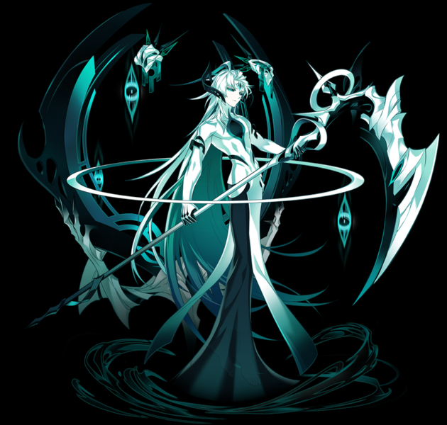
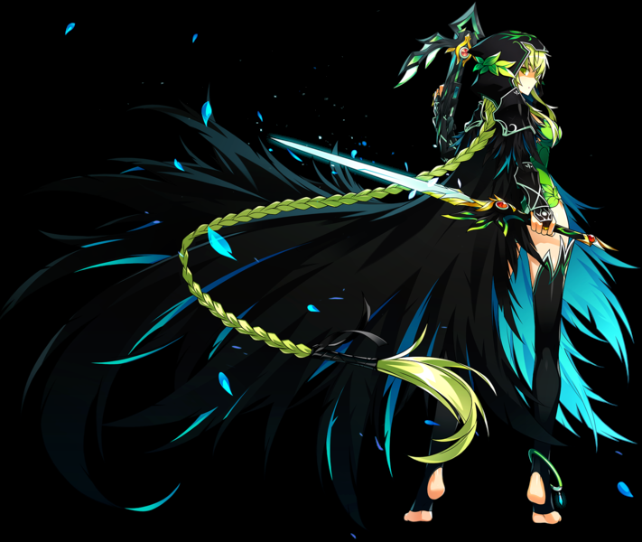
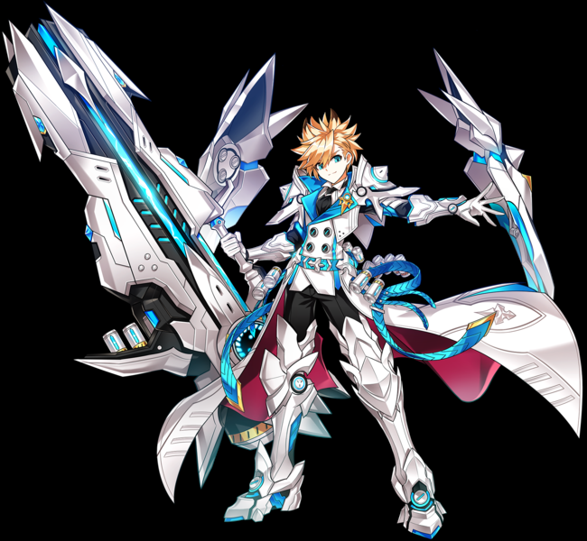
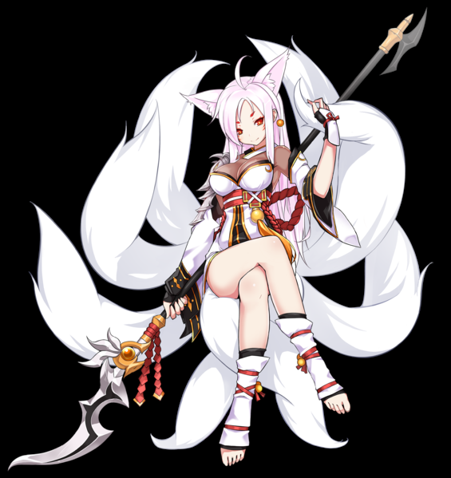
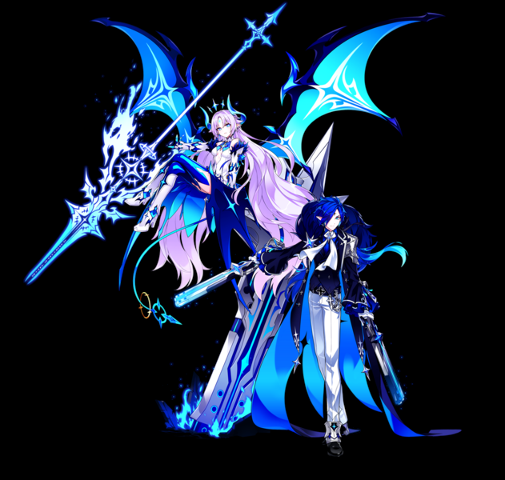

In Elsword you can play as Elsword and his friends.
A strong and skillfull swordsman. Has infinite potential with the sword, and a strong body due to strict training.
The "Way of the Sword" ability enables him to utilize the energy gained through attacks and skills into 2 types of auras: Aura of Vitality and Aura of Destruction. Aura of Vitality helps Elsword to recover mana faster by 200% (150% in PvP) through certain commands and allows Elsword to use skills labeled as "Vitality skills" at a lower MP cost, allowing Elsword to make the most out of his MP pool. Aura of Destruction helps Elsword to do more damage by increasing the damage of his heavy attacks and skills labeled as "Destruction skills" by 100% and 50%, respectively.
Elsword and his big sister, Elesis, were enjoying an ordinary day, when an unexpected change came about. Elesis had received a reinforcements request from the Velder Army, which required her immediate departure. Elsword tried to persuade her to let him fight alongside her and their father, but failed. She ensured him that the next time they meet, he will have become much stronger, and reluctantly walked away to fulfill her duty.
Elsword was alone, lamenting about the circumstances as he laid upon his bed, reminiscing about his family. His father was one of the best knights of the kingdom, and his sister a highly desired talent, and there he sat alone, feeling weak and helpless. Wishing he was stronger, he grabbed his sword, and began to train relentlessly, day after day, swearing that he will become strong enough to protect everyone. With every bit of progress he made, his face filled with a smile as he recalled his sister's words of encouragement, knowing that someday he would join his family in battle at last.
A battleworn mercenary who uses a blade and his Nasod Arm for combat.
His suppressed rage is unleashed and channeled to the Nasod Core. It feeds off of Raven's rage, and the more rage, the stronger it becomes. The Nasod Core assists Raven in attacks and defense depending on the battle situation.
Raven Cronwell is a commoner born in the Velder Kingdom. His biological father was an unknown commoner but also a strong warrior. At some point, he died, leaving Raven orphaned. Raven was later adopted by one of Velder's most powerful commanders, General Cronwell. He raised Raven to be an expert swordsman. He attended a prestigious military academy but once word of his commoner upbringing became known, many of the students began to discriminate against him, birthing his hatred for nobles. During the academy's Mock Siege Warfare, Raven saved a student named Owen, a brilliant tactician who was bullied by other students. Raven met Seris leading up to the Siege Warfare, a student who wasn't part of any team yet she asks Raven and Owen. While Owen was reluctant, Raven agreed to invite her.
A Knight that wields a two handed sword. Uses quick yet powerful attacks with mysterious powers.
Elesis possesses the gauge of Chivalry, similar to her younger brother Elsword's "Way of the Sword" gauge. Elesis fuels this gauge best offensively, with both basic attacks and skills. Depending on the types of attacks used to fill the gauge, a corresponding aura will activate once completely filled. Activation of the gauge will give her one of the two auras: Spirit of Annihilation or Aura of Gale. Spirit of Annihilation will make Destruction skills and commands automatically deal Critical damage and ignore Guard while Aura of Gale reduces the MP cost and cooldown time of Gale skills.
Elesis is Elsword's older sister and sword-fighting mentor. At 16, she had already traveled far to become a better swordfighter. She returns to Ruben to join her brother in training, only to part ways again after enduring a vicious attack from the demons.With a mission to protect Elrios from an absolute demon invasion, Elesis takes on the road once more. This may be the best way to keep her brother and their homeland safe. While she does not know when, Elesis eagerly looks forward to someday reuniting with her beloved brother.
The 'Creation Magic' granted by the Goddess Ishmael and the unique 'Cycle Magic' given with his name will allow you to play with limitless potential.
Power System is a system exclusive to Ain which allows him to switch between "Cycle Magic" and "Creation Magic". When he's in default state, attacking enemies will charge the Power Gauge. After the Power Gauge is fulfilled, it will turn blue and you will shift into Creation Mode. During this time, you will be able to switch between "Cycle magic" and "Creation magic" with the V key (default key).Unlike other characters, Ain's awakening mode is known as "Spiritualism mode", which has only 1 Awakening Bead, and receives only 5% increase in damage. However, he can reawaken during his "Spiritualism mode" to ascend another stage and obtain additional benefits.
Ainchase Ishmael was created by the Goddess Ishmael to restore the power of El.When the El exploded into tiny shards, he fell through a Time & Space gap created by the explosion. After falling through the gap, Ain lacked the power to sustain his existence and started to wilt away. While in the gap, he wandered aimlessly through the chaos of Time and Space. He eventually felt a faint power of the El and instinctively chased after it. He felt the El getting stronger and with a renewed sense of the mission, he regained his powers and was able to escape.Now, after escaping the chaos of the Time & Space gap, he returns to Elrios to assist the El Search Party and fulfill his mission.
Has impressive ranged attacks and close combat capabilities.
By harnessing the power of the natural world, Rena has the capability to further enhance her basic attacks and various skills. The Nature's Force System is a means for her to deal extra damage by persistently utilizing the essential battle moves.
Every day, two young elves, Lua and Rena, explored the forests that surrounded their village. One such day, a change occurred in Rena, as she was now seeing small spirits gather around her. She attempted to tap into the power of these spirits by saving a wilted flower, but the effort caused her to fall unconscious. The head elder, Branwen arrived to help, sending the spirits away and awakening Rena. After learning what happened, Branwen took Rena in as her disciple, and taught her how to control and use her power responsibly.On the night of a festival, Lua and Rena ventured into the woods to ditch their chores. They relaxed under the moonlight, gazing at the stars and speaking of their futures. Rena was reluctant to talk about hers, but Lua wanted to become an adventurer, with Rena as her companion. Rena later wished to prove herself to Branwen and requested a test. She ventured deep into the dark forest for her task, which caused her spirits to act unusual. It had appeared they prevented Rena from encountering any danger, which allowed her to complete her task, and head back to the village.
A tough fighter that wields a giant cannon, and ignores the enemy's attacks while attack them.
Chung's most notable feature is his Ammo. With the Cannonball System, Chung can reload and stock his Ammo in order to access strong Combos and also strengthen some Ammo-reliant Skills to devastating proportions, requiring him to keep a steady supply of Cannonballs at all times for optimal play.He also has the ability to Awaken into his Berserk Mode, which will grant him an unlimited supply of Ammo for its duration.Furthermore, he can access a Guarding and Counterattacking system to allow him to charge into the battlefield offensively and defensively.
As the son of Helputt, Hamel's White Coloussus, Chung faced heavy scrutiny from others who felt he was unfit to be part of the Seiker family lineage. With his feminine appearance and recurring sickness, many doubted his abilities, although his father held tremendous confidence in his young son. By tradition, Chung was given a guardian stone on his birthday, which would resonate with him and eventually grant him a weapon and armor suited for him.Chung endured a lot of bullying due to his appearance and lack of strength, causing him grief and pushing him to train harder with his father to prove himself, but the bullying left him without any confidence. Helputt spoke with him, telling his own life story that was identical with Chung's experiences thus far. Chung felt a new sense of confidence from his father's tale, feeling that he too can overcome his shortcomings, and fulfill his dream of becoming a great warrior.As Chung approached the altar to receive his weapon and armor from the guardian stone, his fear was gone. He was granted a full suit of white armor, which he named Freiturnier, and a giant cannon, which he named Destroyer. From then, Chung vowed to start anew, that he would look over the children of the Seiker family, and become the strongest warrior in all of Hamel.
A job that utilizes the long range of a spear and also the power of 'Eun'.
Ara also has a unique trait that separates her from the others; the "Spirit Energy" she uses, which can be used as a substitute for MP. Ara's Awakening is similar to that of Chung's Freiturnier in that 3 awakening beads will bring on a change in appearance. In Ara's case, she gains the tails of a 9-tailed fox, and white hair.
In the Northern Empire, resides a martial arts family, known for having sealed the destructive Spiritual Beast, Eun. After the great El explosion, the Haan family was able to wield the power of the Moon El after it flew into their territory following the great El explosion, turning them into fierce warriors. This did not sit well with others in the capital, who tried to quell their power by appointing the eldest son, Aren as the capital's guard captain. Within the family, some Ara's siblings weren't too pleased with her and her mother being a part of the family, all except Aren who treated her like a sibling. She tried her best to be as perfect as can be, in order to avoid being teased by her other siblings, but due to Aren's respect for her, she was able to withstand the teasing from her other siblings, knowing that at least one of them cared for her.Ara saw herself as a failure who despite her best efforts, continued to fail at martial arts. Aren showed up to ease her resentful mind, and ordered her to spar with him. After pushing her to do her best, she defeated him, much to his amazement as he encouraged her to continue devoting herself to training. During a festival worshiping the Spiritual Beast, Ara struggled to find excuses to avoid participating in a sparring contest, in fear of soiling her family's reputation. As she hid, she overheard members of the Zhen family questioning the Haan family's reputation after defeating her siblings in sparring, including Aren who had previously injured his arm. Aren pointed out there was one participant remaining, which was Ara, who he escorted to the arena. Remembering her brother's words of encouragement, she managed to defeat the Zhen family participants, earning the Haan family the final victory of the sparring contest. Aren smiled in delight at her accomplishment, knowing that she was on the path to becoming a great warrior.
Lu uses her powerful claw to shred her enemies to pieces while Ciel gains enhanced assassin abilities from the pact with Lu.
Being a duo character with a tag-team playstyle, Lu and Ciel do not share mana and also have a special system known as Combination. When either Lu or Ciel is tagged out, the inactive character will rapidly recover 6 MP per second (1 MP in PvP). Lu and Ciel have a fourth resource known as the Combination Gauge, which is used exclusively for Combination Skills and can only be filled when the player switches through a normal combo or a skill. Having a duo character play-style, players have access to a special mechanic only available known as Switching. Players can play as either Lu or Ciel in both towns and dungeons, and change between them via pressing Switching.png V (default key and only available where combat is possible), combos, or skills. When switching via the V key, the character switching out cannot be hit, but the character switching in can be hit and the combination gauge will not be filled. Cooldown time for V key is 1 second.
The demon monarch Lu emerges in Elrios as a small child after using up all her mana to escape the realm of demons. Due to her servant's betrayal, she has lost all her power and possessions. A hitman named Ciel finds Lu in her weak state and takes her in. Her name is all she remembers. Before long, assassins from the demon world come for Lu, and Ciel gives his life to protect her.Just then, Lu remembers everything. A mystical contract allows her to revive Ciel as a half-demon, and he is bound to serve her in return. Now, with Ciel's help, Lu sets out to take everything back. Together, they are Luciel, a dangerous duo in pursuit of demons that plague the land.